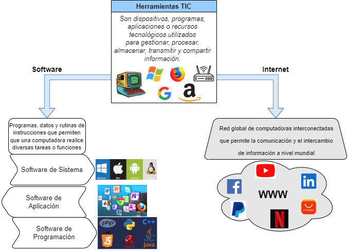

Software
Es un término que se refiere a los programas informáticos, conjunto de instrucciones, datos o aplicaciones que permiten a una computadora realizar una variedad de tareas y funciones. Es una parte intangible de un sistema informático que proporciona las instrucciones lógicas y las estructuras necesarias para realizar diversas operaciones.
En palabras más cotidianas, podríamos comparar el software con el asistente de Tony Stark en la película Iron Man, llamado Jarvis. Este asistente controlaba el traje (hardware o computadora) y ayudaba a Stark en sus tareas. O también, de una manera más real, el sistema operativo (como Windows, Mac OS, Linux o Android) en nuestras computadoras personales es un tipo de software. Este software engloba todos esos programas e instrucciones que permiten que la computadora funcione y gestione sus recursos como la memoria, el procesamiento y la visualización de la información. Es como el cerebro detrás de las acciones de la computadora.
Se distinguen algunos tipos principales de software:
Software de Sistema
Conjunto de programas que se encarga de controlar y coordinar cómo opera el hardware, asegurando su funcionamiento de manera correcta. En esta categoría entran los sistemas operativos (como Windows, Mac OS, Linux o Android), que son como el jefe que organiza todo, los controladores de dispositivos que permiten a la computadora entender y comunicarse con sus componentes (disco duro, procesador, tarjeta gráfica, puertos USB, etc), y las herramientas para manejar archivos, como las utilidades de gestión, que nos ayudan a organizar y manejar nuestros documentos y datos.
Software de Aplicación
Son aquellas herramientas especializadas que usamos para hacer cosas específicas en nuestra computadora o dispositivos. Estos programas están diseñados para resolver problemas o realizar tareas concretas que los usuarios necesitan. Por ejemplo, tenemos los programas de escribir documentos (procesadores de texto), como Microsoft Word, las hojas de cálculo para hacer cuentas como Microsoft Excel, programas de diseño gráfico para crear imágenes, navegadores web para buscar en Internet (como Google Chrome, Firefox, Opera, Safari), juegos para entretenerse, y aplicaciones de productividad para organizar tareas, entre otros ejemplos. Esta clase de software se adapta a distintas necesidades y nos ayudan a realizar distintas actividades en nuestros dispositivos digitales.
Software de Programación
En términos simples, estos programas se usan para crear aplicaciones mediante la escritura de código. Imagina estos programas como intérpretes que traducen nuestras ideas (escritas en un lenguaje que entendemos) a instrucciones que la computadora comprende (números y códigos). Estas herramientas asisten a programadores y desarrolladores en la creación, corrección y mantenimiento de los programas que usamos a diario. Generalmente, incluyen editores para escribir el código (como Visual Studio Code, RStudio, Sublime Text, Vim, Notepad++), compiladores que transforman el código a un formato que la computadora puede ejecutar, y depuradores para detectar errores.
El software está formado por un conjunto de instrucciones escritas en lenguajes de programación, como Java, C++, Python, y otros más. Estas instrucciones son el código fuente y actúan como un manual que los programadores escriben para decirle a la computadora qué hacer. Luego, este código fuente se convierte en un lenguaje que la computadora comprende directamente, conocido como código ejecutable o código máquina. Es como transformar las instrucciones escritas por humanos en un idioma que la computadora puede seguir al pie de la letra.
Crear software implica un conjunto de pasos, como planificar, diseñar, hacer y mantener programas de computadora. Estos programas pueden ser adaptados para cubrir necesidades específicas, ya sea para una persona en particular o para empresas completas. Es como construir herramientas digitales a medida que pueden hacer lo que cada uno necesita, ya sea un usuario común o una empresa grande.
Ciclo de Vida del Software
El ciclo de vida del software se refiere a un esquema teórico que detalla las diferentes fases que atraviesa un programa o sistema de computación, desde su inicio hasta su eventual desuso o retiro. Este ciclo ofrece una estructura organizada para guiar el desarrollo, cuidado y administración del software a lo largo de su existencia.
La norma ISO/IEC/IEEE 12207:2017 representa un estándar global que define pautas y criterios para las etapas del ciclo de vida del software. Esta normativa proporciona directrices y condiciones específicas para la administración, desarrollo, compra, entrega, operación y cuidado tanto del software como de los sistemas de información.
Aunque existen diferentes modelos de ciclo de vida del software (Modelo en Cascada, modelo en espiral, RAD, modelo incremental, modelo de desarrollo ágil) muchos comparten etapas similares, que pueden variar en nombres y enfoques, pero generalmente incluyen las siguientes fases principales:
Recolección de Requisitos
En esta fase se lleva a cabo la identificación y recopilación de los elementos necesarios para el sistema. Aquí se establece qué funciones debe realizar el software y cuáles son las demandas y requerimientos de los usuarios y los involucrados en el proyecto.
Análisis
Implica una evaluación detallada de los requisitos obtenidos para comprender su viabilidad técnica y económica. Durante esta etapa, se establecen los límites y restricciones del proyecto, logrando una comprensión clara de los elementos esenciales que se deben construir.
Diseño
Usando como base los requisitos y el análisis previo, se elabora la estructura del software, definiendo los elementos clave como los componentes, la configuración del sistema, los procedimientos lógicos y el diseño visual que interactúa con los usuarios.
Implementación/Codificación
En esta etapa, se procede con la codificación del software, tomando como base el diseño previamente concebido. Aquí, los programadores y desarrolladores se dedican a traducir esta estructura y planificación en un código de programación efectivo y funcional.
Pruebas
Después de completar el desarrollo del software, se procede a realizar pruebas rigurosas con el fin de identificar posibles errores, validar su correcto funcionamiento y asegurar que cumpla con los estándares y necesidades definidas previamente.
Despliegue/Implementación
Es la puesta en marcha del software acabado en el entorno operativo real, permitiendo así que los usuarios finales lo utilicen y se beneficien de sus funcionalidades.
Mantenimiento
En la fase de Mantenimiento, se llevan a cabo modificaciones, actualizaciones, correcciones de fallos y mejoras en el software con el objetivo de asegurar su desempeño continuo y adaptarse a las nuevas exigencias que puedan surgir con el tiempo.
Estas etapas no son necesariamente lineales y secuenciales. En muchos casos, el ciclo de vida del software sigue un enfoque iterativo e incremental, donde las etapas se repiten y se superponen para mejorar continuamente el producto en respuesta a la retroalimentación del usuario y los cambios en los requisitos.
El entendimiento del ciclo de vida del software es esencial para los equipos de desarrollo, ya que proporciona un marco de referencia para la gestión, planificación, seguimiento y control de los proyectos de desarrollo de software.
